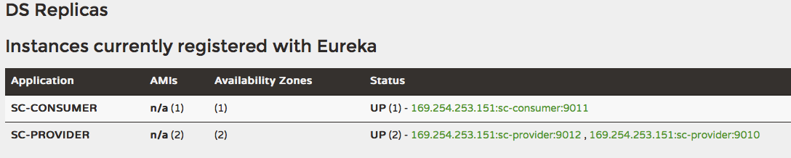

这是Spring Cloud上手系列的第六篇，代码放在GitHub上，随着本系列文章更新。
Ribbon 概述
Ribbon是一个客户端负载均衡器。Feign中使用到了Ribbon。Ribbon与Eureka结合使用时，Ribbon可以从Eureka注册中心中获取服务端列表。
验证Feign中的负载均衡
Feign包含了对Ribbon的支持，不需要编写额外的代码和配置。我们启动以下应用，来验证：
registry，运行在9001:
|
|
provider1，运行在9010:
|
|
provider2，运行在9012:
|
|
consumer，运行在9011:
|
|
不需要启动服务网关。
启动完上述服务后，访问http://localhost:9001，可以看到sc-provider应用有两个服务节点，分别运行在9010和9012上：

使用浏览器访问http://localhost:9011/consumer/hello?name=Jamsa，多次刷新或从不同浏览器访问，从provider1和provider2的控制台中可以看到两个应用都被调用到了。
在RestTemplate 上使用负载均衡
在第四篇的最后一节，我们已经提到过在RestTemplate上使用@LoadBalanced可以使用以服务名为基础拼接的URL来调用Eureka上注册的服务。这种调用方式就是以Ribbon为基础的负载均衡调用。此处，不再缀述。